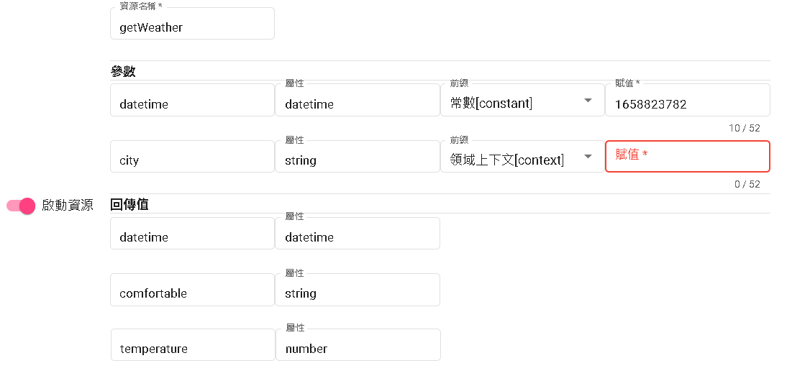

知識庫介紹
知識庫包含問答對以及表格問答，以下將會介紹兩者的定義以及用途。
表格問答
快速回答常見問題：表格問答可以用於回答有結構性的問題。透過事先建立好的問答表格，機器人可以直接從表格中檢索相應的答案，迅速提供給用戶，節省時間和人力成本。
自助式問答服務：通過表格問答，用戶可以自主搜索和獲取所需的信息，而不必等待人工客服的回覆。
數據收集和分析：通過表格問答，可以收集用戶的輸入和反饋，將其存儲為結構化數據。這些數據可以用於進一步的分析和洞察，了解用戶需求、瞭解產品或服務的優化方向，以及改進對話機器人的效能。
表格問答結構
- 關鍵字：在搜尋的時候若命中關鍵字會顯示該搜尋的結果。
- 數字：在搜尋的時候可以比較該數字欄位的到搜尋的結果。
- 日期：在搜尋的時候可以比較該日期欄位的到搜尋的結果，像是出版日期、出產日期等。
- 文本：不影響搜尋。但是根據其他條件所搜尋的結果會同時附帶此文本。
- 是否：根據是否去搜尋結果，像是支援5G或是有WIFI嗎之類的。
支援能力
| 問題型態 | 支持問法 | 支援 | 範例 |
|---|---|---|---|
| 簡單查詢 | 單屬性 | v | Pixel 6的電池容量是多少? |
| 多屬性 | v | Pixel 6的電池容量是多少?有沒有支援快充? | |
| 多實體 | v | Pixel 6和iphone12的電池容量是多少?有沒有支援快充? | |
| 條件查詢 | 屬性條件 | v | 價格大於1萬的手機有哪些 |
| 屬性排序 | v | 價格最貴的手機是哪支? | |
| 推理計算 | 聚合計算(求和、求平均) | x(部分支援求和) | [第一句]我想找國別是日系的車?[第二句]這些價格總共多少? |
| 判斷計算 | v | Pixel 6有沒有支援快充?[同屬性查詢] | |
| 比較計算 | x | iphone12比Pixel 6貴了多少? | |
| 分組、行計算 | x |
問答對
問答對是指問題和對應答案的配對組合，它們的主要用途包括：
自動回答常見問題：問答對可用於自動回答常見問題，如產品功能、服務詳情、常見疑問等。將常見問題與相應的答案建立成問答對，可以使機器人快速且準確地回答用戶的疑問，節省人工客服的時間。
資訊查詢：問答對可以提供資訊查詢的功能，用戶可以輸入問題，機器人通過匹配問答對，提供相應的答案。這樣，用戶可以快速找到所需的資訊，不必浪費時間在網站搜索或諮詢人工客服。
技術支持：問答對可用於技術支持的場景，用戶可以提出技術問題，機器人通過匹配相關的問答對，提供解決方案或指導。這樣可以節省人工技術支持的成本，同時提供即時且準確的支持服務。
教育和培訓：問答對在教育和培訓領域也有應用價值，可以用於提供學習材料的問答形式，幫助學生進行學習和自測。教師或導師可以建立問答對，涵蓋學習內容的不同方面，學生可以通過與機器人的互動來檢查自己的學習進度和理解程度。
總結來說，問答對在自動回答、資訊查詢、技術支持和教育培訓等方面都有廣泛的應用。它們能夠提供準確、即時的答案，節省人力成本，同時提升用戶體驗和學習效果。
回答型態
- 1.text :純文本
- 2.template:模板[可透過resource回傳值注入]
- 3.redirect:(轉向場景[須搭配Bot Flow])
- 4.JSON API:使用該平台的JSON去做回覆，目前支援LINE、Messenger、Telegram。
template模板輸出詳情
- context->根據回傳值的鍵(key)做輸出。
- extractTime->您可以將時間數值轉換為特定格式的字串。
- listOutput->您可以獲取回傳數值（需為陣列），並根據特定格式生成一個列表。在該列表中，每一項都包含數值中的特定屬性。
context
${#context.comfortable}
在這個範例中，${#context.comfortable}代表取得回傳值中的鍵為comfortable的內容。您可以將這個指令插入到您需要的地方，以獲取相應的回傳值並進行輸出。
這樣，您可以方便地根據回傳值的鍵進行相應的操作和呈現。
extracTime
${%extractTime(#context.datetime,'yyyy年MM月dd日HH:mm','')}
在這個範例中，您需要將第一個參數設置為回傳的時間數值（以秒為單位）。第二個參數則是一個字串，用於指定所需的日期格式，例如yyyy年MM月dd日HH:mm。第三個參數目前尚未實裝，預計用於指定時區，但在預設情況下，它將使用機器人流程的時區。
透過使用這個優化後的指令，您可以方便地將時間數值轉換為符合指定格式的字串，以滿足您的需求。
listOutput
${%listOutput(#context.order,'${#br}第${#index}筆:日期${#item.date}, 金額為:${#item.money};' ,'1')}
在這個範例中，您需要將第一個參數設置為回傳的陣列數值。第二個參數則是一個字串，其中${#br}代表換行符號，${#index}代表目前迴圈的索引值，${#item.date}和${#item.money}分別代表每個項目的日期和金額屬性。
藉由使用這個優化後的指令，您可以方便地生成具有特定格式的列表，以便於顯示和使用所需的數值資訊。
透過下圖選擇資源，並呼叫該資源得到JSON回應為
{
"temperature": 16,
"datetime": "1665990946",
"next_d": [
{
"rain_per": "100",
"date": "2022-10-18"
},
{
"rain_per": "10",
"date": "2022-10-19"
}
],
"comfortable": "稍有寒意"
}

模板原本輸出
舒適度:${#context.comfortable}，溫度${#context.temperature}度c 時間${%extractTime(#context.datetime,'yyyy年MM月dd日HH:mm','')} ${%listOutput(#context.next_d,'${#br}第${#index}筆:日期${#item.date}, 下雨機率:${#item.rain_per}%;' ,'1')}
模板替代輸出
舒適度:稍有寒意，溫度16度c 時間2022年10月17日14:48
第1筆:日期2022-10-18, 下雨機率:100%;
第2筆:日期2022-10-19, 下雨機率:10%;
如果傳遞值未填寫或發生錯誤，僅會做參數值取代為空。
舒適度，溫度度c 時間
接著讀
最後更新時間
2023/05/22
- 增加表格問答結構
- 增加表格問答以及問答對的基本解釋
- 將item.br以及item.index更改為br以及index。